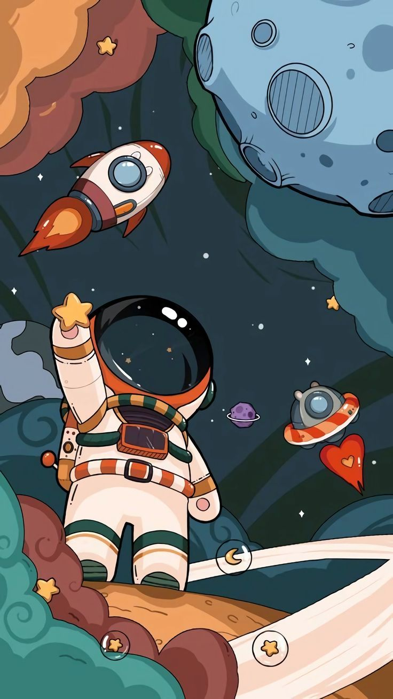
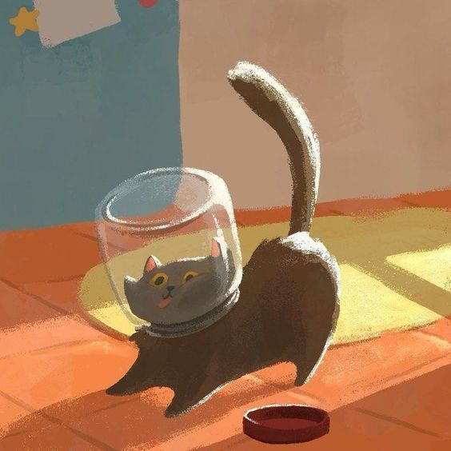
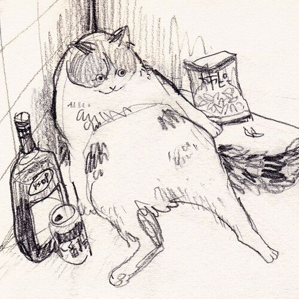

GSAP PRACTICE
SECTION 1

Within this meticulously arranged AI-generated ensemble lies a tantalizing facade, captivating our gaze. Yet, as we search for the soul of human expression, we question whether algorithms can truly embody the essence of authentic art.
SECTION 2


Within this meticulously arranged AI-generated ensemble lies a tantalizing facade, captivating our gaze. Yet, as we search for the soul of human expression, we question whether algorithms can truly embody the essence of authentic art.